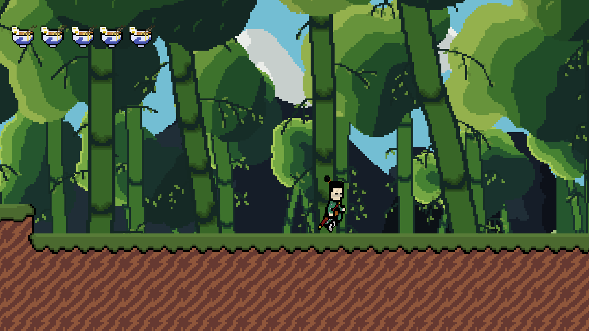
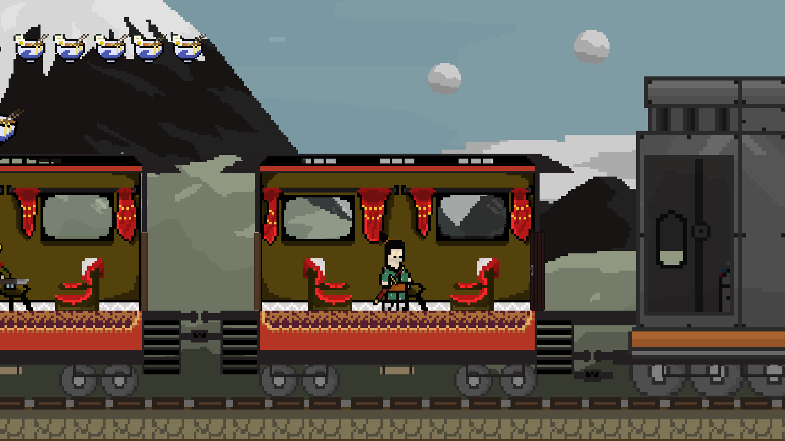
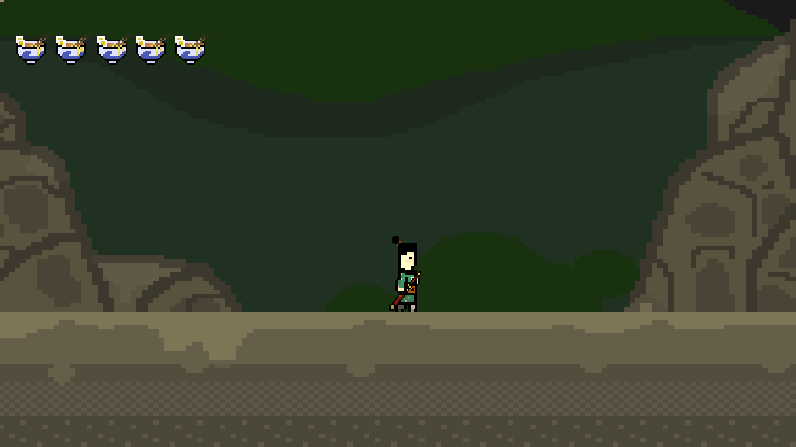
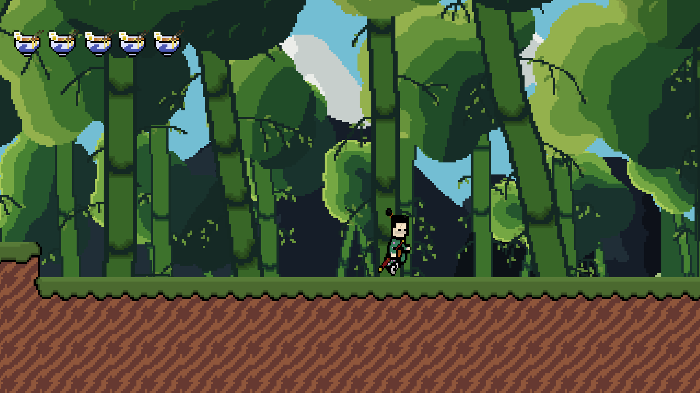
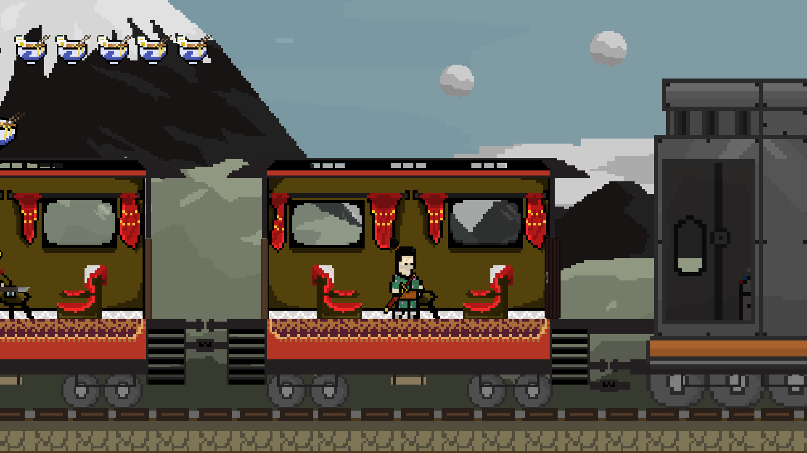
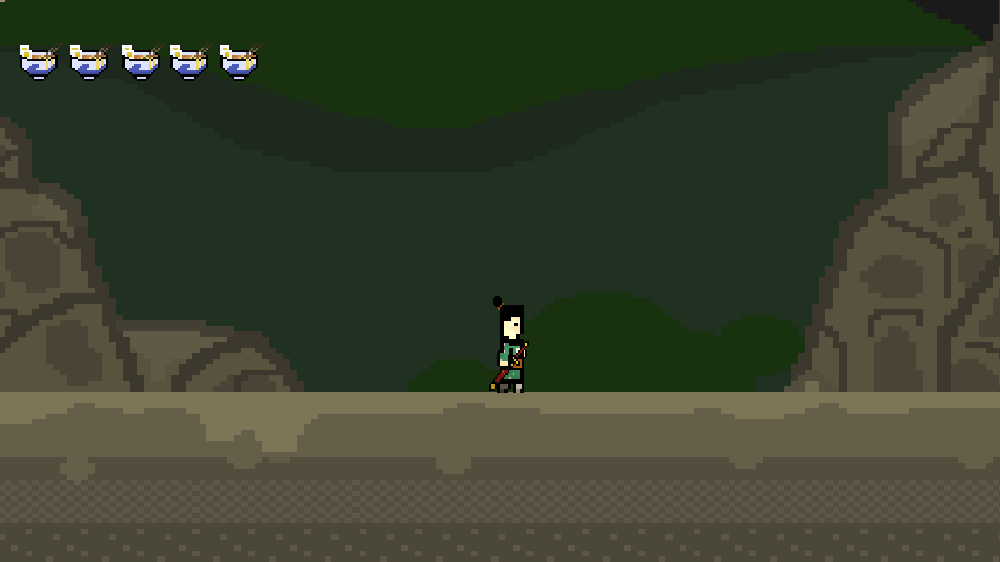

Satsuma
Autores
Giordano Razzolini, William Fabiano, Lucas Freitas e Felipe Barros
Ano de criação
2022
Estilo
Pixel art
Gênero
Plataforma 2D
Desenvolvimento
História: Desenvolvido em C# usando a Unity Engine como projeto final do curso técnico em Programação de Jogos Digitais do IFPR Campus Curitiba